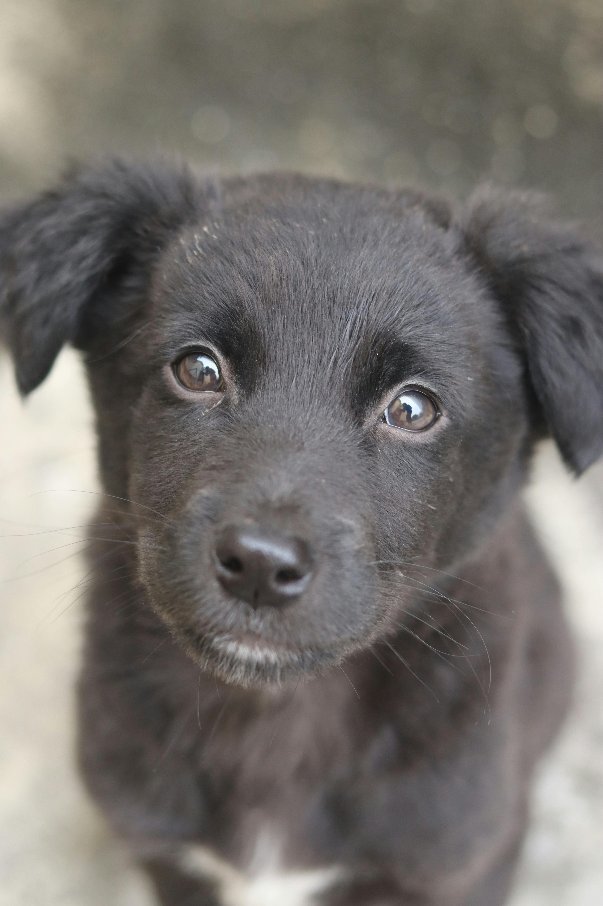
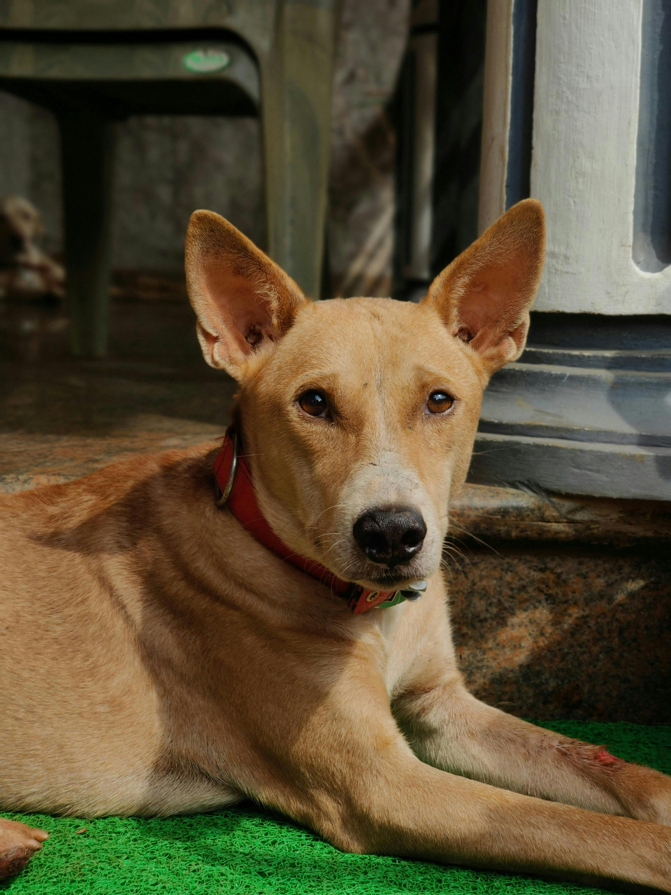
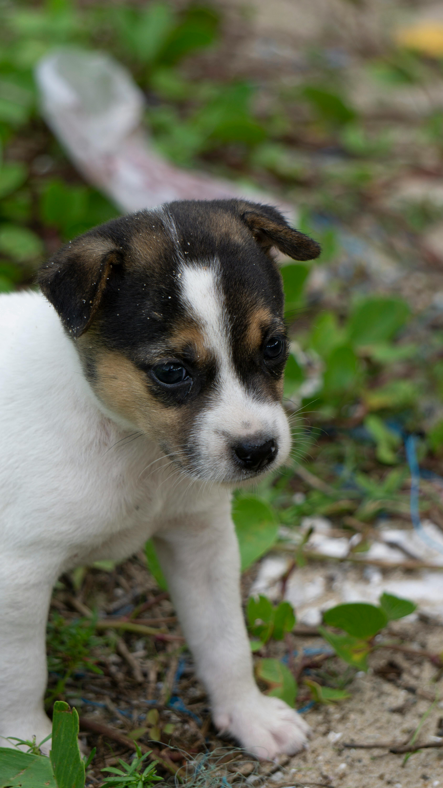
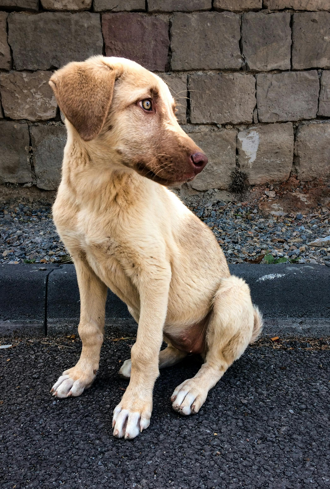
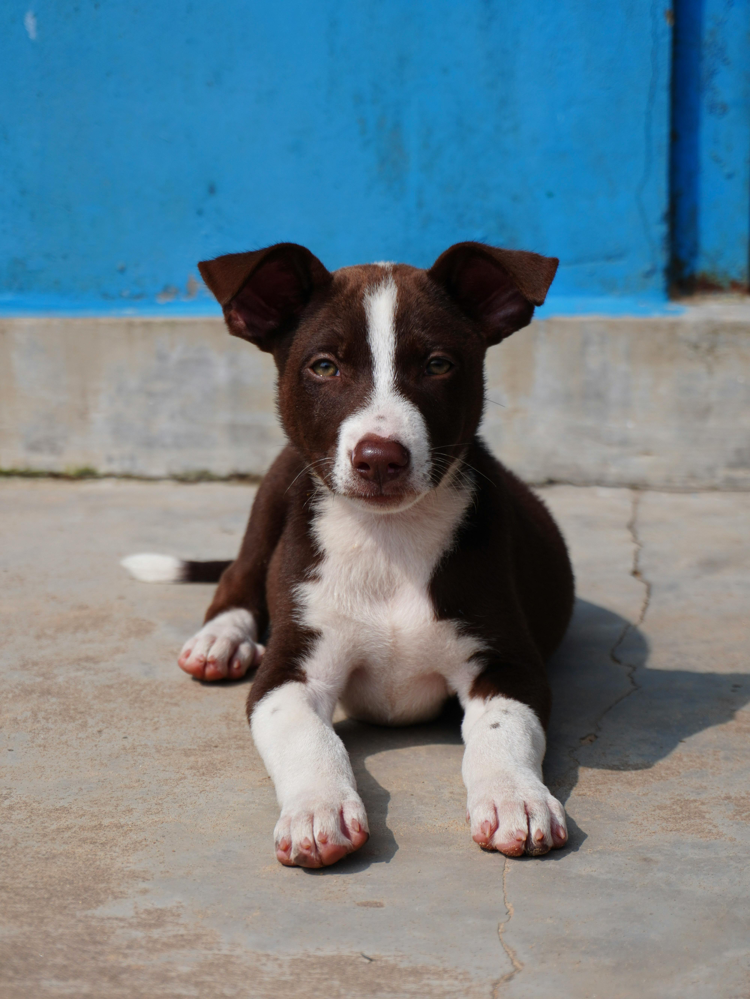

Câini disponibili pentru adopție
Găsește un partener loial de plimbări și un prieten pe viață.
| Poză | Nume | Vârstă | Gen | Rasă | Descriere | Acțiune |
|---|---|---|---|---|---|---|
 |
Max | 3 luni | M | Metis | Un pui curios și foarte afectuos, Max adoră să fie în preajma oamenilor. Este jucăuș, dar și atent la tot ce se întâmplă în jurul lui. Ideal pentru o familie care își dorește un companion loial încă de mic. | |
 |
Kira | 2 ani | F | Podenco mix | Kira este un câine elegant și inteligent, cu o energie calmă. Este atentă și ușor rezervată la început, dar devine rapid foarte atașată de stăpân. Perfectă pentru persoane liniștite. | |
 |
Tobi | 2-3 luni | M | Jack Russell Terrier mix | Tobi este un mic explorator plin de energie. Extrem de jucăuș și curios, iubește să descopere lucruri noi și să interacționeze cu oamenii. Ideal pentru cineva activ. | |
 |
Bruno | 1 an | M | Labrador Retriever mix | Bruno este un câine calm și echilibrat, cu un temperament foarte prietenos. Se adaptează ușor și este foarte loial. Potrivit atât pentru familii, cât și pentru persoane singure. | |
 |
Milo | 3-4 luni | M | American Staffordshire Terrier mix | Milo este un pui energic și foarte atașat de oameni. Deși pare serios, este extrem de iubitor și jucăuș. Cu puțină dresare, poate deveni un companion excelent. |